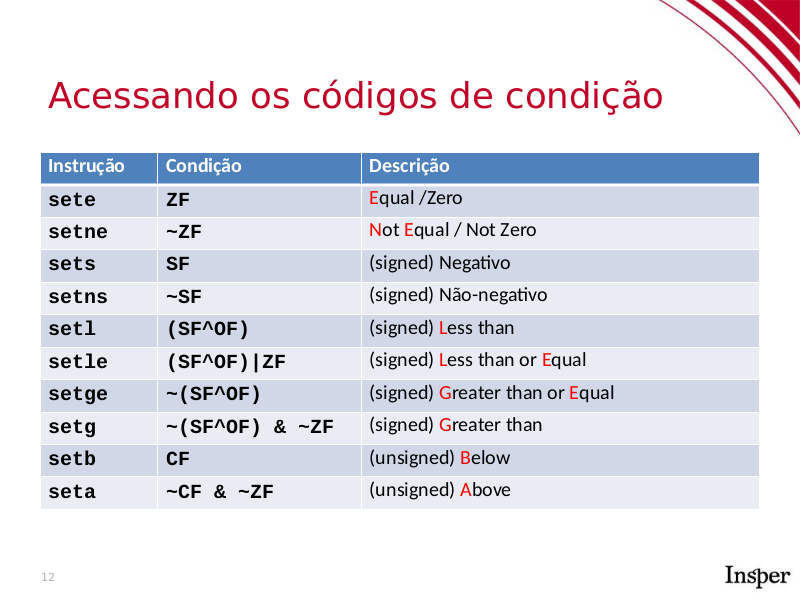
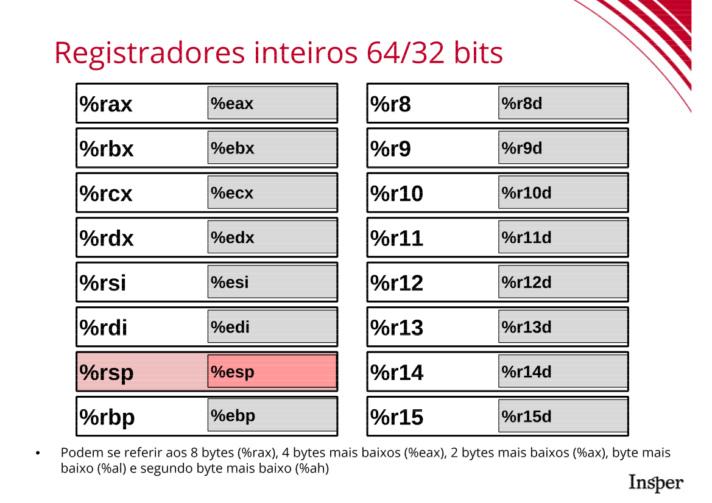
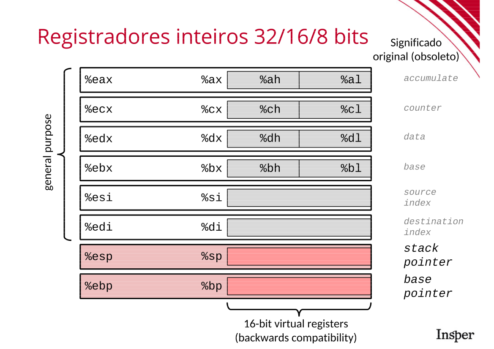
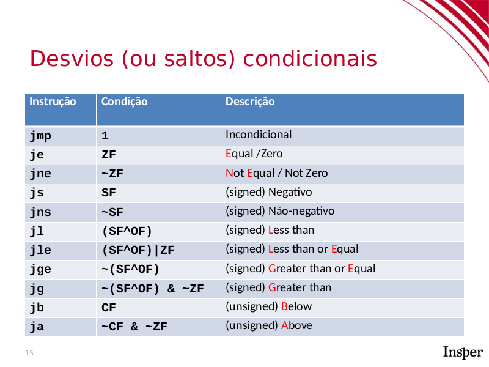

05 - Condicionais¶
Expressões booleanas¶
Vimos na expositiva que toda operação aritmética preenche as flags CF, ZF, SF e OF e que podemos usar estas flags para montar expressões booleanas com as instruções set*. A tabela abaixo mostra as instruções responsáveis cada tipo de expressão booleana.

Também vimos que podemos preencher estas flags usando as instruções cmp e test, que executam operações aritméticas (subtração e E bit a bit) mas não guardam o resultado.
Vamos analisar o código assembly da função igual. Por enquanto não precisa abrir o gdb nem código algum, apenas faça a análise direto neste material!
int igual(int a, int b) {
return a == b;
}
0000000000000000 <igual>:
0: 39 f7 cmp %esi,%edi
2: 0f 94 c0 sete %al
5: 0f b6 c0 movzbl %al,%eax
8: c3 retq
A comparação a == b é feita primeiro executando cmp entre os argumentos %edi e %esi e depois usando sete (set equal) para atribuir 1 em %al se %edi == %esi e 0 caso contrário.
Por fim, temos a instrução movzbl, que faz o cast de char (%al) para int (%eax). Lembre-se que as instruções set* só modificam os primeiros 8 bits de %eax. O restante continua com o valor antigo. Usamos movzbl para extender o número em %al para ocupar todo %eax.
Tip
As instruções de conversão de tipos são bastante frequentes em Assembly, principalmente para expandir valores colocados em registradores menores para registradores maiores. Elas seguem a seguinte regra:
MOVtsd
tpode serzpara tipos unsigned (completando com **z**eros) espara tipos signed (completando com o bit de **s**inal).sé o tamanho do registrador fonte seguindo a notaçãobpara 1 byte,wpara 2 bytes,lpara 4 bytes eqpara 8 bytes.dé o tamanho do registrador destino, seguinto a mesma notação acima.
Por exemplo, a instrução MOVZWQ converte um unsigned short para um unsigned long. Conversões de 4 para 8 bytes muitas vezes são feitas com a instrução cltq, que extende (com sinal) %eax para %rax. Uma boa referência é este site da Oracle.
Vamos agora praticar. Mas antes, relembre da aula anterior a os registradores e a ordem em que os parâmetros da função são passados:
- Argumentos inteiros ou ponteiros são passados nos registradores (nesta ordem):
%rdi%rsi%rdx%rcx%r8%r9
Para retornar usamos a instrução ret. Ela é equivalente ao comando return de C e devolverá o valor armazenado no %rax.
Registradores:


Pronto! Nos 3 exercícios abaixo temos funções que avaliam uma (ou mais) expressões booleanas entre seus argumentos e retornam o resultado.
Arquivo ex1.o¶
Reconstrua a função ex1 a partir do código assembly abaixo.
Dump of assembler code for function ex1:
0x0000000000000000 <+0>: cmp $0xa,%edi
0x0000000000000003 <+3>: setg %al
0x0000000000000006 <+6>: movzbl %al,%eax
0x0000000000000009 <+9>: retq
End of assembler dump.
Exercise
Qual é o tamanho do argumento de ex1? Ele é signed ou unsigned?
Exercise
Coloque sua tradução em um arquivo .c. Valide sua solução com o professor ou com algum colega que já validou sua solução, ou utilize o gdb, conforme a próxima dica!
Tip
Uma outra maneira de conferir se sua solução está correta é compilar e conferir no gdb se a sua solução produz o mesmo ASM que o compilado disponibilizado pelo professor. Caso seu código não possua função main, gere um .o utilizando a flag -c. Veja o Exemplo de compilação sem função main:
$ gcc -Og -g -Wall -std=c99 -c ex_resposta.c -o ex1_resp.o
Então, abra o gdb e confira se o ASM gerado confere com o disponibilizado pelo professor!
Arquivo ex2.o¶
Reconstrua a função ex2 a partir do código assembly abaixo
Dump of assembler code for function ex2:
0x0000000000000000 <+0>: cmp %rsi,%rdi
0x0000000000000003 <+3>: setbe %al
0x0000000000000006 <+6>: movzbl %al,%eax
0x0000000000000009 <+9>: retq
End of assembler dump.
Exercise
Qual é o tamanho dos argumentos de ex2? Ele é signed ou unsigned?
Exercise
Coloque sua tradução abaixo. Valide sua solução utilizando comparação do ASM (dica nesta aula), com o professor ou com algum colega que já validou sua solução.
Arquivo ex3.o¶
Reconstrua a função ex3 a partir do código assembly abaixo.
Dump of assembler code for function ex3:
0x0000000000000000 <+0>: cmp %rsi,%rdi
0x0000000000000003 <+3>: setg %al
0x0000000000000006 <+6>: test %rsi,%rsi
0x0000000000000009 <+9>: setg %dl
0x000000000000000c <+12>: and %edx,%eax
0x000000000000000e <+14>: movzbl %al,%eax
0x0000000000000011 <+17>: retq
End of assembler dump.
Exercise
Qual é o tamanho dos argumentos de ex3? Ele é signed ou unsigned?
Exercise
Coloque sua tradução abaixo. Valide sua solução com o professor ou com algum colega.
Condicionais¶
Vimos na segunda parte expositiva que Assembly possui apenas instruções de pulos condicionais (j* onde * representa uma comparação usando as mesmas abreviações de set*) e não condicionais (jmp). Vimos também que a combinação destas instruções com cmp e test é equivalente à dupla de comandos
if (cond-booleana) {
goto label;
}
A tabela abaixo mostra as operações de saltos condicionais.

Exemplo guiado¶
Vamos agora fazer um exemplo guiado. Analisaremos o seguinte código:
0000000000000000 <eh_par>:
0: 40 f6 c7 01 test $0x1,%dil
4: 74 06 je c <eh_par+0xc>
6: b8 00 00 00 00 mov $0x0,%eax
b: c3 retq
c: b8 01 00 00 00 mov $0x1,%eax
11: c3 retq
Pares de instruções test-j* ou cmp-j* são comumente usadas para representar a construção if-goto.
Exercise
O nome da função dá uma dica de seu valor de retorno. Você consegue entender o porquê test $1, %dil faz isto?
Dica: Escreva o teste exato que a função faz.
Vamos agora traduzir a função eh_par para gotoC. As linhas 0-4 são transformadas em um par if-goto. O restante são instruções que já conhecemos.
int eh_par(long a) {
if ((a & 1) == 0) goto if1;
return 0;
if1:
return 1;
}
Tiramos então o goto e levando em conta sua resposta no item anterior, ficamos com o seguinte código. Note que precisamos negar a comparação feita no código anterior!
int eh_par(long a) {
if (a % 2 != 0)
return 0;
else
return 1;
}
Podemos observar duas coisas no código assembly gerado:
- O código que estava dentro do
iffoi colocado após o código que estava fora do if! O compilador pode mudar a ordem dos nossos blocos de código se for conveniente (para ele, não para nós). - A construção
test-j*ecmp-j*pode ser mapeada diretamente paraif-goto. Porém, reconstruir um código legível requer, muitas vezes, mudar código de lugar.
Vamos agora praticar com alguns exercícios simples:
Arquivo ex4.o¶
Veja o código abaixo
Dump of assembler code for function fun4:
0x0000000000000000 <+0>: test %rdi,%rdi
0x0000000000000003 <+3>: jle 0xf <fun4+15>
0x0000000000000005 <+5>: mov $0x2,%eax
0x000000000000000a <+10>: imul %rsi,%rax
0x000000000000000e <+14>: retq
0x000000000000000f <+15>: mov $0x1,%eax
0x0000000000000014 <+20>: jmp 0xa <fun4+10>
End of assembler dump.
Exercise
Qual expressão booleana é testada?
Exercise
Faça a tradução desta função para gotoC.
Exercise
Transforme o código acima em C legível.
Arquivo ex5.o¶
Veja o código da função abaixo.
Dump of assembler code for function ex5:
0x0000000000000000 <+0>: test %rdi,%rdi
0x0000000000000003 <+3>: setg %dl
0x0000000000000006 <+6>: test %rsi,%rsi
0x0000000000000009 <+9>: setle %al
0x000000000000000c <+12>: test %al,%dl
0x000000000000000e <+14>: jne 0x15 <ex5+21>
0x0000000000000010 <+16>: lea -0x2(%rsi),%rax
0x0000000000000014 <+20>: retq
0x0000000000000015 <+21>: lea 0x5(%rdi),%rax
0x0000000000000019 <+25>: retq
End of assembler dump.
Exercise
Qual são as expressões booleanas testadas? (Dica: são 3, assim como no exercício 3).
Exercise
Faça uma tradução para gotoC.
Exercise
Transforme seu código acima para C legível.
Exemplo guiado II¶
Veremos agora um exemplo if/else:
int exemplo2(long a, long b) {
long c;
if (a >= 5 && b <= 0) {
c = a + b;
} else {
c = a - b;
}
return c;
}
Seu assembly correspondente, quando compilado com gcc -Og -c é
0000000000000000 <exemplo2>:
0: 48 83 ff 04 cmp $0x4,%rdi
4: 0f 9f c2 setg %dl
7: 48 85 f6 test %rsi,%rsi
a: 0f 9e c0 setle %al
d: 84 c2 test %al,%dl
f: 75 07 jne 18 <exemplo2+0x18>
11: 48 89 f8 mov %rdi,%rax
14: 48 29 f0 sub %rsi,%rax
17: c3 retq
18: 48 8d 04 37 lea (%rdi,%rsi,1),%rax
1c: c3 retq
Primeiramente, notamos que a função recebe dois argumentos (pois só utiliza %rdi e %rsi) e que ambos são tratados como long. Vamos então às expressões booleanas. Existem três expressões boolenas:
cmp-setg(linhas0-4) compara%rdicom4e seta%dl=1se%rdi>4(**g**reater)test-setle(linhas7-a) compara%rsicom0e seta%al=1se%rsi<=0(**l**ess or **e**qual).test(linhad) entre%dle%al. O resultado não é armazenado.
Logo abaixo do último test temos um jne (linha f), acrônimo para **j**ump if **n**ot **e**qual. Ou seja, fazemos o jump se %dl && %al for verdadeiro.
Logo em seguida temos instruções aritméticas, que já estudamos nos últimos handouts. Assim como vimos nos slides, vamos converter este código para gotoC primeiro.
Assim como fizemos nos exercícios de 1 a 3, criaremos uma variável para as expressões booleanas 1 e 2 e substituiremos as instruções test-jne (linhas d-f) por um par if-goto. Veja abaixo:
int exemplo2(long a, long b) {
long retval;
int expr1 = a > 4;
int expr2 = b <= 0;
if (expr1 && expr2) goto if1;
retval = a;
retval -= b;
return retval;
if1:
retval = a + b;
return retval;
}
Podemos então melhorar tornar este código mais legível, resultando no seguinte:
int exemplo2(long a, long b) {
if (a > 4 && b <= 0) {
return a+b;
} else {
return a-b;
}
}
Duas coisas importantes podem ser vistas neste código
- As comparações não são exatamente iguais (
a>4ea>=5), mas são equivalentes. - O compilador pode trocar a ordem do
if/elsee colocar oelseprimeiro no Assembly gerado. Isto não altera o resultado da função, mas pode ser confuso de início.
Arquivo ex6.o¶
O exercício abaixo usa if-else.
Dump of assembler code for function ex6:
0x0000000000000000 <+0>: cmp %rsi,%rdi
0x0000000000000003 <+3>: jle 0x8 <ex6+8>
0x0000000000000005 <+5>: mov %rdi,%rsi
0x0000000000000008 <+8>: test %rdi,%rdi
0x000000000000000b <+11>: jle 0x10 <ex6+16>
0x000000000000000d <+13>: neg %rsi
0x0000000000000010 <+16>: mov %esi,%eax
0x0000000000000012 <+18>: retq
End of assembler dump.
Exercise
Traduza o código acima para gotoC.
Exercise
Faça uma versão legível do código acima.